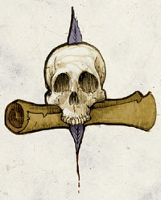

耶各 Jergal（远古死亡之神）
（左二）
费伦神系 微弱神力
别称：万物终结之王 Lord the End of Everything，死亡纪录者 Scribe of the domed，无情者 the Pitiless One
圣徽：置于滚动条与鹅毛笔上的无下颚骷髅

居住界域：冥界 The Fugue Plane
阵营：守序中立 LN
神职：宿命论 fatalism，隆重的葬礼 proper burial，坟墓的守卫 guardian of tombs
信徒：武僧，死灵师，圣武士
牧师阵营：守序善良 LG，守序中立 LN，守序邪恶 LE
神域：宿命 Fate，守序 Law，长眠 Repose，符文 Rune，折磨 Suffering
喜好武器：白色手套 A white glove（巨镰 scythe）
耶各是死者之王的总管，这位宿命论的神o负责纪录所有亡魂的最终命运。k从不发怒，总是维持着一贯的漠然与过度的礼仪；k说话的音调听起来就像是在久被遗忘 的墓穴中飘荡的寒栗回声。万物终结之王唯一关心并努力的事，就是规律有序地纪录整个世界的命运流转，一如世界正缓缓地沉向死亡。
耶各的教会规模很小，兼且十分隐密，内部有严密的阶级体系，是个几近于修道院的抄写团体，名为「死亡的纪录者」（Scriveners of Doom）。其神殿大都建于死寂陈旧的墓穴或陵寝之上，成员们大部分的时间都投注在保存并继续扩充数量繁多的滚动条列表，记录人们的死亡与死后的归处。唯有 在塞尔（Thay）－在此死亡乃是日常生活中习以为常的一环－耶各的教会才较有兴旺的迹象。少数的耶各信徒今日仍遵循着「苍白面具教团」 （Companions of the Pallid Mask）的古老传统，致力于摧毁（或控制）那些未受教会认可及有害的不死生物。
耶 各的牧师在黄昏时－象征着生命终点的时刻－祈祷以获得神术。在每一年的最后一晚，k的牧师们会暂时停下那辛勤的无尽记录。在这个被称为「来年前夕」 （Night of Another Year）的圣夜中，牧师们会朗读这一年来他们所仔细记下每一位死者的名讳，当念毕所有的记录后，他们会齐声高喊「（离终结）又更近一年！」（One Year Closer！），然后隔天又开始进行记录。教会内唯有一种仪式，称为「封记」（the Sealing）。每当记录了一个生物的死亡与死后归处之后，死亡的记录者会将一小撮余烬或骨灰洒在这段文字记载上，略为涂污墨水，以标志距离整体世界的 终结又迈进了一小步。有些成员会在得到教会许可之后转化成不死生命，以期能继续自己的记录任务。有一些牧师会兼职成为武僧或死灵师。
历史/与众神的关系 History/Relationship：
当 耶各厌倦于履行自己的职责，几乎消逝而遭世人遗忘时，k将自己大部分的神职都让渡给班恩（Bane）、巴尔（Bhaal）、以及米尔寇（Myrkul）。 在这些神o灭亡之后，k继续服侍后起的希瑞克（Cyric）与克蓝沃（Kelemvor）。k只对「死者之王」此一职位效忠，因此如果在位者无法正确地履 行职责，k便会暗中私下进行颠覆。耶各目前与克蓝沃共事的情况颇为融洽，且仍对希瑞克抱持轻蔑嘲弄的态度。k目前绝大多数的精力都投注在对抗那提倡以不死 之道延长寿命的维沙伦（Velsharoon）。
教义 Dogma：
每当一个生命诞生时，为他所准备长眠之处也已随之预 定。整个生命就是一个寻找此处、而后在此长眠的历程。相对于死亡的永恒，生命的种种活动不过是转瞬即逝的脱序现象。力量、成功、喜乐与虚弱、失败、悲痛， 都一样的短暂无常。唯有死亡才是恒久的绝对，它是必定会到来的终点。设法位混乱失序的生命带来秩序－因为死亡是他们必然的结局。随时准备面对死亡的到来， 它随时都可能降临，决不妥协。唯有当服侍比死亡更重要的目的时，才应延长自己的寿命。
--
资料来源：费伦大陆信仰与神系《Faiths & Pantheons》
译者：一凡